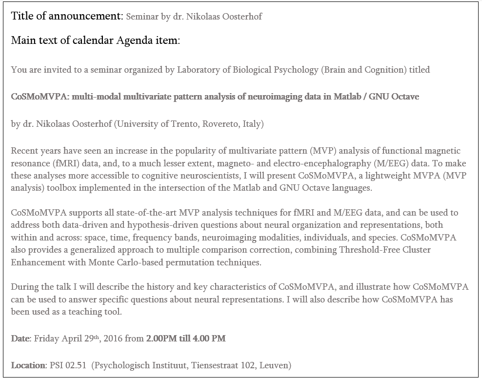
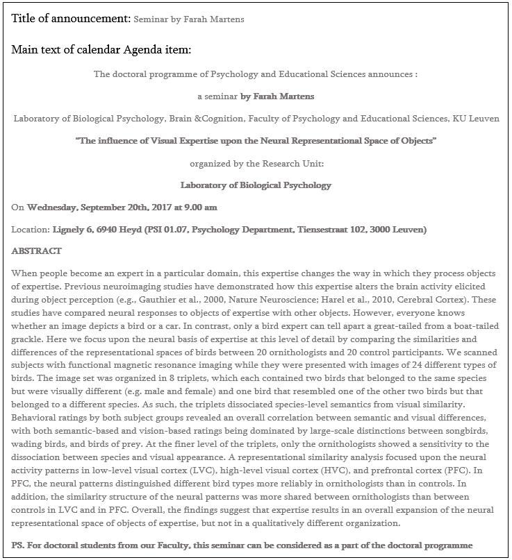

Do great science and show it to the world¶
(We'll start small and go bigger)
Lab meetings¶
Types of lab meetings¶
There are different types of lab meetings that happen throughout the academic year.
On a rotation basis, each lab member is assigned with a slot and is in charge of the presentation. On this occasion, you can present an update on your research, an interesting / relevant paper for a Journal Club (JC), or other important topics (practicing an upcoming talk or interview, for example).
Once per month, lab memebers assigned to a specific batch will give a quick (1-2 slides, 15 minutes) update on the latest development in their work. This meeting is an occasion to ask for help if you are stuck on a particular step, method, analysis, or to just keep each other in the loop. If your individual meeting is scheduled for the week before or the week after your batch, you can skip the quick update for the longer one.
This type of lab meeting is usually scheduled after a lab member is back from a conference / workshop. The idea is for that person (or those people) to give an overview of the conference and present studies of interest for the lab. This type of meeting does not have a regular frequency.
Once every two months, we meet to discuss new papers that came out recently. This is an occasion to discuss new topics, new methods, or just interesting work that you might have seen around. There is no fixed presenter, we will go over the list of papers one by one and the person who added it will introduce it. At any time, if you see an intersting paper you can add it to the reading list.
Schedule¶
Lab meetings usually happen once per week on Mondays, after lunch. On that day, we have lunch together in the meeting room and then move to the more science-y affairs. The meeting room will be specified in a reminder email that is sent every Thursday before the lab meeting and can be seen in the meeting schedule. The schedule is made at the beginning of the academic year and consists of a mix of meetings with updates and others with more fixed topics.
Attendance¶
You can attend the meetings in person or online, there will be always a link to a Teams call. If you will be online, or absent, let the lab meeting manager know (as of August 2024, Filippo Cerpelloni).
Who is presenting¶
Each lab member is part of the standard rotation of presenters for the individual meetings. Additionally, they are assigned to one of the batches that will alternate in the quick updates. Interns are usually not part of the standard roations, but will be assigned to a batch.
The rotation of presenters is made by randomizing the order of the names, but can be adjusted based on anyone's availability. If you want / need to switch your slot, you can directly contact the person you would like to switch with and then let the lab meeting manager know about the change. If you would like to change with a slot assigned for a group meeting, ask the lab meeting manager directly.
Presentation Guidelines¶
To keep our lab meeting presentations organized, please follow these guidelines:
Naming Convention for Individual Lab Meetings
Use the format: YYYY-MM-DD_presenter_topic.pdf
Example: 2024-08-24_andrea_dnns-in-vision.pdf
Storage Instructions¶
-
Before the meeting: Store your slides in:
This allows all updates to be presented from one computer. -
After the meeting: Move your presentation to:
- After the meeting: Store your presentation in:
Useful Links¶
-
 Meeting Schedule
Meeting Schedule
View the specific and updated schedule for lab meetings
-
Presenters and Batches
Check the list of presenters and batch divisions
-
 New Papers List
New Papers List
Access the list of new papers to discuss in meetings
Access Required
These files are located in the NeuroSPACE / Hoplab Team organizational folders. You need access to the Teams group to view them.
Conference Posters¶
Useful Resources¶
-
Design Guidelines
Learn best practices for creating effective academic posters
-
 Printing Services
Printing Services
Information about university printing options
-
 KU Leuven Templates
KU Leuven Templates
Access official KU Leuven poster templates
-
 Printing Request Form
Printing Request Form
Submit your poster for printing
-
 Tips and Tricks
Tips and Tricks
Learn do's and don'ts for creating effective posters
Poster Printing Request¶
To print your poster, submit a "Large-format printing request" using this form. Follow these steps:
-
Choose paper type:
140gr: Standard paperGlanzend: Shiny versionCanvas: Foldable, thick canvas (good for travel)
-
Select size and quantity
-
Upload your PDF file
-
Additional options:
- Poster tube requirement
- White border trimming
-
Pick-up location
-
Finalize request:
- Ask for an invoice
- Use An Van Kets' u-number (
u0057838) when finalizing your request.
Present your work (and announce it)¶
Presentation Templates¶
You can find KU Leuven PowerPoint and LaTeX templates for presentations here.
Please consult this page to correctly use the official KU Leuven brand templates.
LBP social media¶
The Laboratory of Biological Psychology has its own profile!
If you are active on :
- Tweet about your lab's and your own achievements
- Share conference presentations / posters
- Announce pre-prints and new papers
- Highlight any relevant scientific wins
Tip
Remember to tag @biolpsychol in your tweets, or DM LBP for a re-tweet to boost visibility!
PPW Faculty calendar¶
It's good practice to announce your PPW presentations in the faculty calendar.
Typically, Kirsten Blommaerts coordinates B&C level announcements. If she's unavailable, follow these steps:
- Go to the PPW faculty calendar
- Log in with your KU Leuven credentials
- Click "Add new items (Dutch)"
- Select the year of your presentation
- Click "+ Nieuw" > "Agenda-item"
- Add your presentation details (title, abstract, time, location)
- Save your changes
Note
After submission, there's a brief moderation period before your announcement appears online.
Having issues? Check the manual for help.
Example announcements¶
Below you can find an example announcement for a general seminar:

Below you can find an example announcement for a doctoral school presentation:

Science communication (SciComm)¶
Reasons to start engaging in SciComm¶
If you are already interested in science communication, that's great! If you need some more convincing, here are some good reasons to start engaging:
- It allows you to connect with other researchers and stakeholders, which can boost your motivation and lead to new collaborations.
- It helps you to develop skills relevant to your future career, such as public speaking, explaining complex concepts, writing and networking.
- Funders (like the KU Leuven, FWO and ERC) value SciComm efforts.
- You are funded by society, so it's crucial for the public to know about your research.
- Despite the fact that it can be stressful, it is also enjoyable and very rewarding!
Straightforward ideas for SciComm participation¶
The easiest and most straightforward ideas to start participating in SciComm yourself are:
- Being active on social media (e.g., on X)
- Creating video abstracts for your paper and starting a Youtube channel
- Writing a press release if you have done newsworthy research (ask the KU Leuven press office for help)
- Writing and publishing a blog post about your research (e.g., on EOS blogs, see for example Klara's blog)
- Making a podcast about your research
Training and opportunities¶
Check out the following sources if you want to train yourself:
- Visuals and slide design: Principiae. Jean-Luc Doumont is a great speaker and frequently gives workshops at KU Leuven on how to create effective slides, posters, presentations, etc.
- Pitching, writing and presenting: The Floor is Yours. They offer workshops and coaching on how to tell your story in a clear and convincing manner, can help you bring your research in the media or make policy impact.
- Crash course on SciComm: Let's Talk Science summer school. A must-do three-day event all about communicative competences.
- Infographics: Baryon. Company of Koen Van den Eeckhout (PhD in physics), who provides workshops on how to visually present complex data.
- All things SciComm: SciMingo. One of the driving forces of SciComm in Flanders. They are the driving force behind many initiatives, such as Science Figured Out, the Flemish PhD Cup and the Scicomm Academy (see below). They also offer lots of workshops (e.g., for podcasting).
- SciComm in the form of theater: ERLNMYR. Company of Ben Verhoeven (PhD in computational linguistics), who uses methods from improvisational theater to improve science communication.
- Science videos: Amazink. Company of Rob Zink (PhD in biomedical signal processing), who offers a variety of freelance visualization services.
Engaging initiatives¶
If you can't wait to start engaging, check out the following initiatives:
- Science Figured Out (SciMingo) is a project in which you are coached to record a 3-minute pitch about your research. A professionally edited video is afterwards published on several social media channels. For example, check out Klara's video here.
- Dag van De Wetenschap is the biggest yearly science event in Flanders, to which you can participate with your research group and organize something fun!
- Kinderuniversiteit organizes yearly workshops for children to get acquainted with research.
- Science is Wonderful! gives primary and secondary school students the change to interact with EU-funded researchers in an engaging format.
- Falling Walls Lab is an international pitching competition for researchers (with coaching). The winner goes to Berlin!
- The Flemish PhD Cup is a competition for freshly promoted PhD'ers, including media training at VRT NWS. The winner gets a lot of media attention, can give a video lecture at the Universiteit van Vlaanderen and can publish a book.
- The Battle of the Scientists is a competition where you explain your research to children in schools.
- Nerdland Festival is the biggest science festival in Flanders hosted by Lieven Scheire, to which you can participate with cool ideas.
(It should be mentioned that all credits for this section go to Klara's former colleague Simon Geirnaert!)